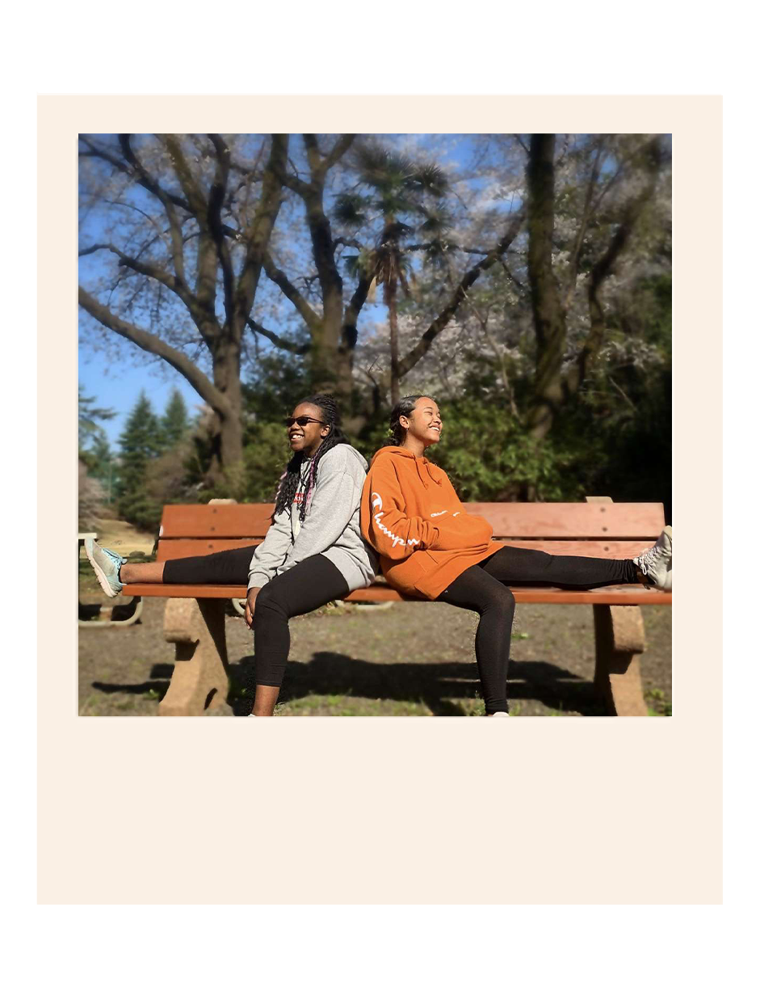
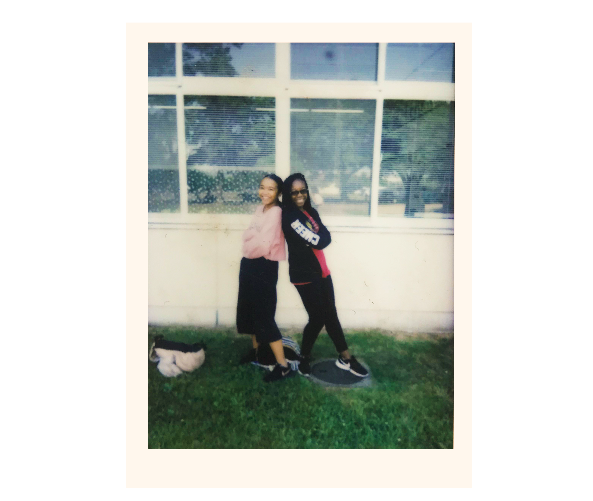
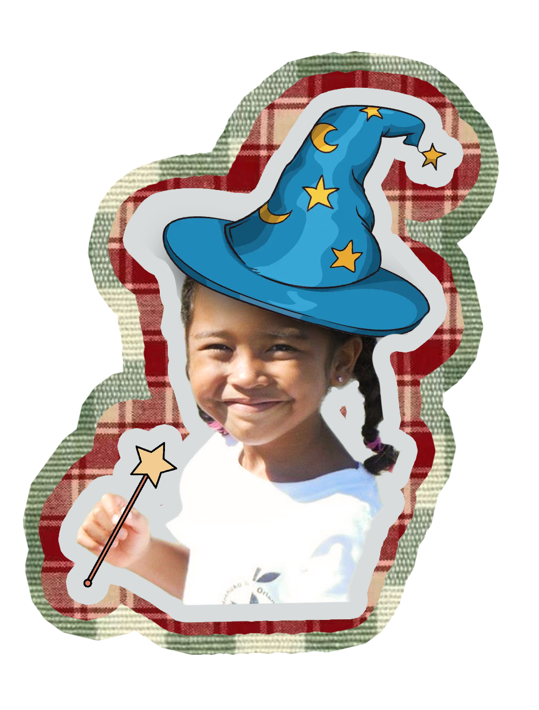
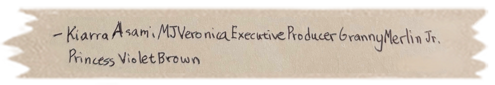
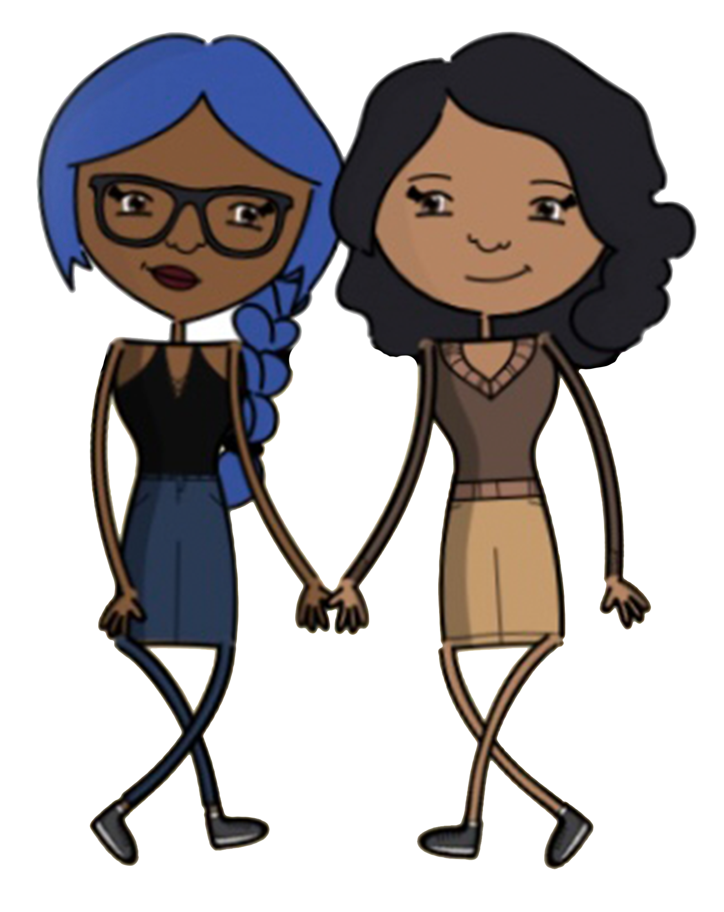
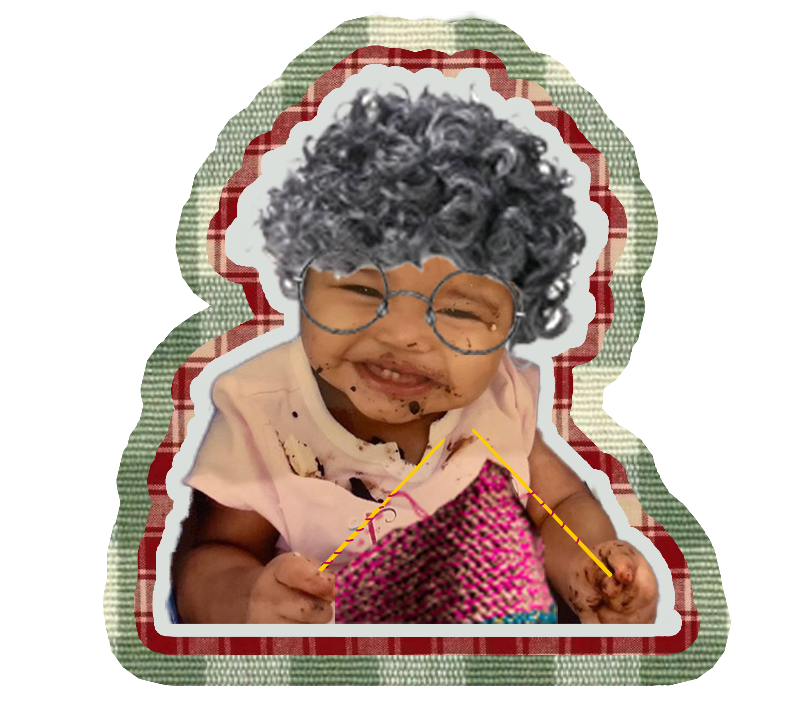
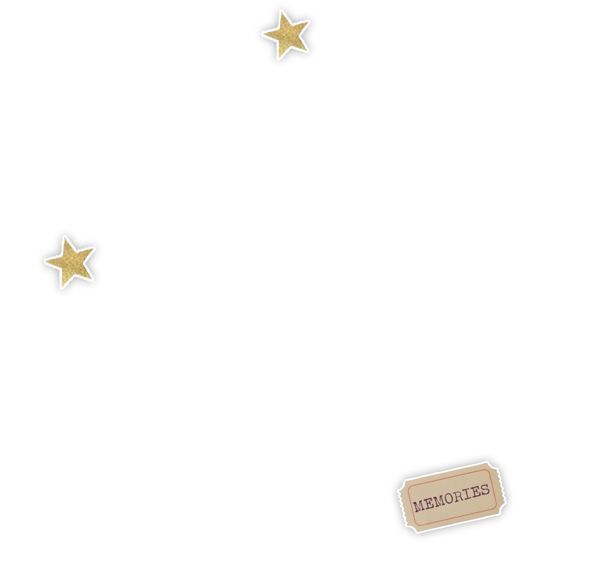

2017-2019: The Beginning
Japan was a lot. There was always some drama going down, some person being a backstabber, but when I reflect back, I don’t think about that anymore. I think back to the time where we walked to the football field on base and sat for what felt like hours talking about life. I think back to recess, when everyone was arguing, we sat on the swings in peace talking about our favorite tv shows. I think back to that karaoke session we had with Mariellen, where you introduced me to the songs I now forever love, Say My Name (Destiny’s Child) and My Boo (Usher and Alicia). You were the first person to show me what a real friendship should look like.
You didn't take advantage of my intelligence, you matched it and acted as a scholar alongside me. Our conversations weren't limited to boys and drama, we were having discussions about pro life/pro choice and the existence of God. You genuinely showed up for me and had my back countless of times. One thing I'll never forget, when we were at the teen center one day, we were sitting on the couch cushions not talking, just sitting, and you said out loud "you know, you know you're really close with someone when you can sit in silence and not feel awkward." I call this the silence test now, and to this day, I use it on every single person now to gauge how comfortable I really feel with them. You and our bond became a model and literally set the bar for every friend to come after.
previous page
next page